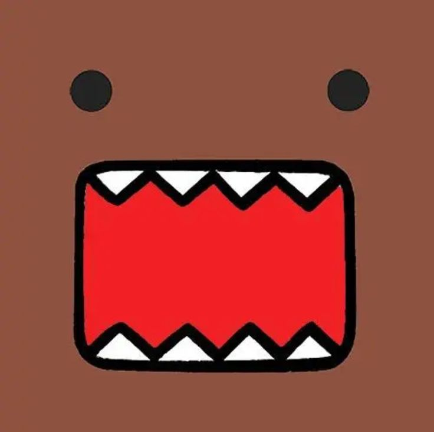

Portafolio de Actividades
Proyecto de Ingenieria
Departamento de Ciencias e Ingenierías | Universidad Iberoamericana Puebla, México.
PRACTICA 3. IMPRESION 3D

- Resumen -
Realizar por nosotros mismos con ayuda del software llamado SOLIDWORKS un objeto retador a nuestra libre imaginación, con el fin de conocer los modelos en 3D que ofrece el software.
- Introducción -
La corporación multinacional Dassault Systèmes menciona que la impresión en 3D es el proceso de creación de objetos mediante el depósito de capas de material unas sobre otras. La impresión 3D se denomina fabricación aditiva (AM) en lugar de los métodos sustractivos tradicionales, como el fresado CNC, cuando se utiliza para la producción industrial.
La función de la impresión comienza al momento de que un modelo 3D digital se divide en cientos de capas finas usando un software específico para exportarlo en formato de código G (un ejemplo es la aplicación llamada Cura), que la impresora 3D lee para saber dónde y cuándo depositar el material.
La función de la impresión comienza al momento de que un modelo 3D digital se divide en cientos de capas finas usando un software específico para exportarlo en formato de código G (un ejemplo es la aplicación llamada Cura), que la impresora 3D lee para saber dónde y cuándo depositar el material.
- Materiales -
- Impresora 3D
- Filamento Pla
- Software de diseño
- Desarrollo -
Para llegar al modelado, se tuvo que indagar en varios sitios web con el fin de generar conocimiento y ponerlo en práctica al momento de realizar el nunchaku.
- Realizar el nunchaku con las proporciones correctas.
- Extruir la pieza y agregarle color.
- Colocar el nunchaku en Cura y agregarlo a la impresora, donde esperaremos hasta que diseñe la base ya que, si la base empieza mal o se sale del dibujo, ya no sirvió y se puede llegar hasta quemar si no hay nadie vigilando.
- Extruir la pieza y agregarle color.
- Resultados -
Como se puede apreciar, se logró realizar el nunchaku al segundo intento, debido a que se tenía un soporte poco fiable, el cual se cambió por un soporte de árbol, si bien este sirve para estructuras que están volando en la base.
- Conclusiones -
Realizar el nunchaku fue realmente retador ya que en ese momento no se contaba con todos los conocimientos necesarios. Sin embargo, se logró realizar gracias a una investigación exhaustiva que llevé a cabo, donde encontré nuevas formas de cómo usar SolidWorks de manera más sencilla.
Durante la realización del objeto, se adquirieron conocimientos tanto en el manejo de SolidWorks como en el uso de la impresora 3D